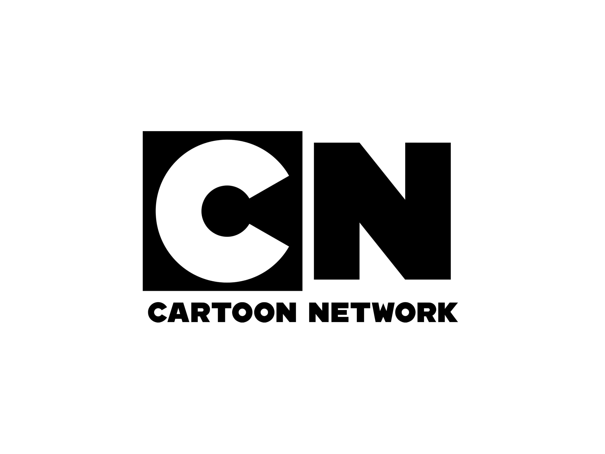

sorry, i couldn't list them all. Here are my top eleven...
1. Pixar
Founded: February 3rd, 1986
Animation Style: CG Animation
Pioneer of CGI animation:
Toy Story (1995), the first CG animated film
Shaped the entertainment industry
~89% critics score
~82% audience rating
Successful Movies, 10/30 of Highest Grossing Animated Film of all time, worldwide, including:
3rd: Incredibles 2 (2018) ,$1,242,805,359
6th: Toy Story 4 (2019), $1,073,394,593
7th: Toy Story 3 (2010), $1,066,969,703
9th: Finding Dory (2016), $1,028,570,889
Their highest awarded film: Inside Out,(2015), 76 awards
Reasoning:
I was debating between Pixar and Disney for the top spot.
I love Disney, which includes Pixar, because their films are very nostalgic and I love the Disney parks and cruises.
Both Disney and Pixar have made huge strides in the animation industry.
But ultimately, I choose Pixar as the first because they have more original stories and, typically, I like CG more than 2D animation.
Additionally, overall, I think their plots are higher quality.
Lastly, their pieces perform better.
2. Disney
Founded: October 16th, 1923
Founders: Walt Disney and Roy O. Disney
Animation Style: 2D and CG Animation
The pinnacle of animation: Created the industry standard animation techniques and rules
~80% critics score
~75% audience rating
Successful Movies, 7/30 of Highest Grossing Animated Film of all time, worldwide, including:
1st: The Lion King (2019), $1,631,724,000 (2nd Highest Grossing Film)
Their highest awarded film: Frozen (2013), 72 awards
3. DreamWorks Animation
Founded: October 12th, 1994
Founders: Steven Spielberg, Jeffrey Katzenberg, and David Geffen
Animation Style: CG Animation
~77% critics score
~73% audience rating
Successful Movies, 5/30 of Highest Grossing Animated Film of all time, worldwide, including:
12th: Shrek 2 (2004), $935, 253, 978
19th: Shrek the Third (2007), $807,330,936
21st: Shrek Forever After (2010) $756,244,673
22nd: Madagascar 3: Europe's Most Wanted (2012) : $746,921,271
Their highest awarded film: Shrek, 38 awards
Reasoning:
DreamWorks is next because of their numbers. I also really enjoy their films, the majority of them have very good plots and their animation is good.
4. Illumination Entertainment
Founded: 2007
Founders: Chris Meledandri
Animation Style: CG Animation
Successful Movies, 5/30 of Highest Grossing Animated Film of all time, worldwide, including:
5th: Minions (2015), $1,159,631,140
8th: Despicable Me 3, $ 1,032,596,894
12th: Despicable Me 2 (2013), $970,216,885
The Secret Life of Pets (2016), $885,302,500
Their highest awarded film: Despicable Me 2 (12 awards)
Reasoning:
Illumination came next because of their numbers and because I am not too familiar with the rest of the animation studios.
I’ve only watched the Despicable me movies and the Lorax and they are really well written and executed (excluding Minions).
However, depite having better sales then DreamWorks Animation, I put them after as I think DreamWorks makes much better films.
5. Blue Sky Stuios
Founded: February 1987
Founders: Alison Brown, David Brown, Michael Ferraro,
Carl Ludwig, Dr. Eugene Troubetzkoy, and Chris Wedge
Animation Style: CG Animation
Successful Movies, 3/30 of Highest Grossing Animated Film of all time, worldwide, including:
14th: Ice Age: Dawn of the Dinosaurs (2009), $886,686,817
Reasoning:
Blue Sky comes next because of their numbers. I am not a fan of their Ice Age movies but Epic and Ferdinand are good.
6. Studio Ghibli
Founded: June 15th, 1985
Founders: Hayao Miyazake, Isao Takahata, Toshio Suzuki, and Yasuyoshi Tokuma
Animation Style: 2G Animation
Some of their Movies:
My Neighbour Totoro (1988)
Kiki’s Delivery Service (1989)
Howl's Moving Castle (2004)
Ponyo (2008)
Their highest awarded film: Spirited Away (2001) (53 awards)
Reasoning:
Studio Ghibli comes next because a lot of people seem to like them, and they have made a big impact of society.
However, I have only seen two of their films, Spirited Away and Ponyo.
Sadly, Ponyo was underwhelming.
But, Spirited Away is great.
Their animation is amazing, and I love the fantastical environment they create.
This studio, and the following, were not on the top 100 list of animations.
7. Laika Entertainment
Founded: 2005
Founders: Phil Knight
Animation Style: Stop Motion Animation
Some of their Movies:
Corpse Bride (2005)
Coraline (2009)
The Boxtrolls (2014)
Kubo and the Two Strings (2016)
Their highest awarded film: ParaNorman (2012) (14 awards)
Reasoning:
I choose Laika next because I really enjoyed Coraline as a kid and because their stop-motion is out of this world.
Sadly, I have not seen their other films, but from their trailers, they seem like high quality films.
8. Aardman Animation
Founded: 1972
Founders: Peter Lord and David Sproxton
Animation Style: Claymation Animation
Some of their Movies:
Wallace and Gromit Short Films (1989 – 2008)
Chicken Run (2000)
Arthur Christmas (2011)
Shawn the Sheep Movie (2015)
Their highest awarded film: The Wrong Trousers (1993) (30 awards)
Reasoning:
I listed Aardman Animations as the eight animation studio because they are the number one Claymation studio and I love their movie Flushed Away.
However, I found Chicken Run boring when I watched it as a kid and I have not seen their other movies.
9. Nickelodeam Animation Studios
Founded: 1905
Founders: Harry Davis
Animation Style: 2D and CG Animation
Some of their Animations:
SpongeBob SquarePants (1999 – present)
The Fairly Odd Parents (2001 – 2017)
Avatar: The Last Airbender (2005 – 2008)
The Adventures of Tintin (2011)
Reasoning:
I listed Nickelodeon as the ninth studio because Fairly Odd Parents was my sister and I’s favourite show on YTV when were children.
However, we enjoyed Family/Disney Channel more. SpongeBob is also good.
10. Warner Bros. Animation
Founded: April 4th, 1923
Founders: Jack L., Harry, Sam, and Albert Warner
Animation Style: 2D and CG Animation
Some of their Work:
Looney Tunes (1930 – 1969)
Batman: The Animated Series (1992 – 1995)
Space Jam (1996)
The Iron Giant (1999)
The Lego Movie (2014)
Reasoning:
Warner Bros. is ten because I’ve only seen Lego Movie 1 and I really enjoyed it.
Though the animation and the plot is good, I would not enjoy watching it a lot.
Additionally, I used to read children’s Looney Tunes book when I was younger and they always made me sad.
11. Cartoon Network

Founded: October 1, 1992
Founders: Ted Turner
Animation Style: 2D Animation
Some of their Work:
Adventure Time with Finn & Jake (2010 – 2018)
The Amazing World of Gumball (2011 – 2019)
Steven Universe (2013 – 2020)
Teen Titans Go! (2013 – present)
Reasoning:
I listed Cartoon Network as the eleventh studio because I have never seen any of their shows.
But, it is one of my top studios because a lot of my friend enjoyed Adventure Time as well as some of their other animations.